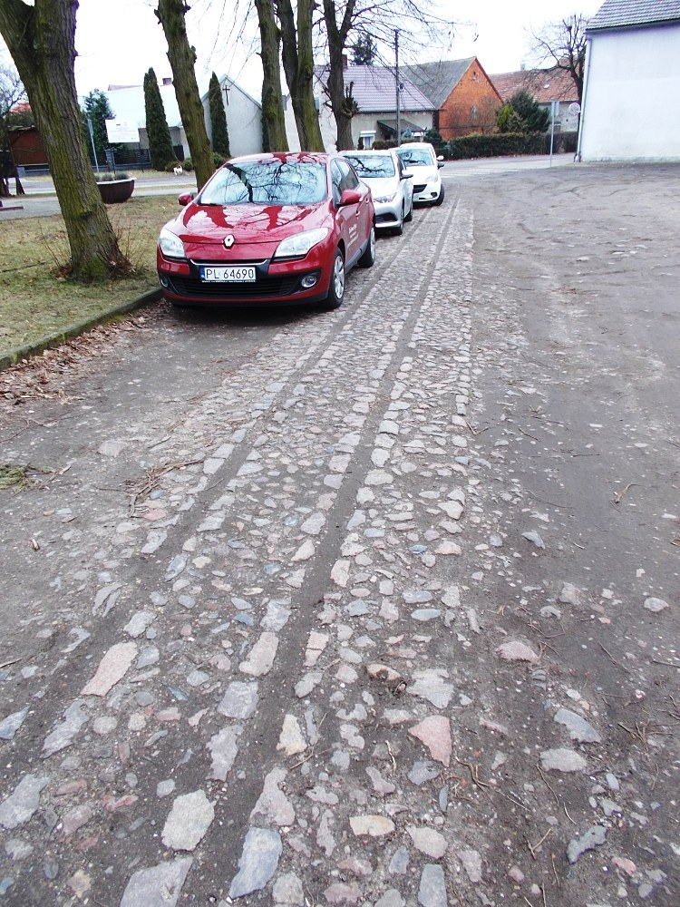
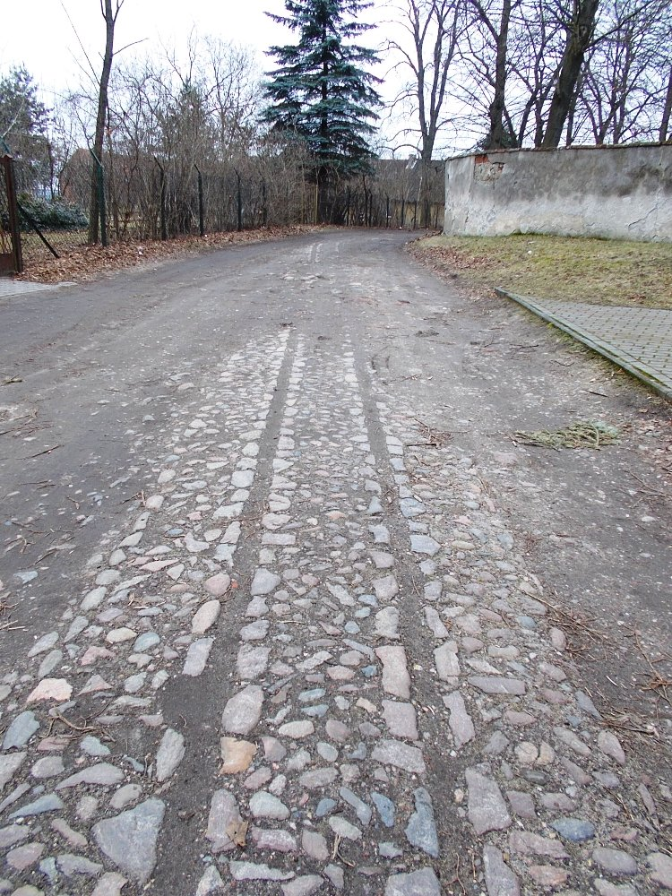
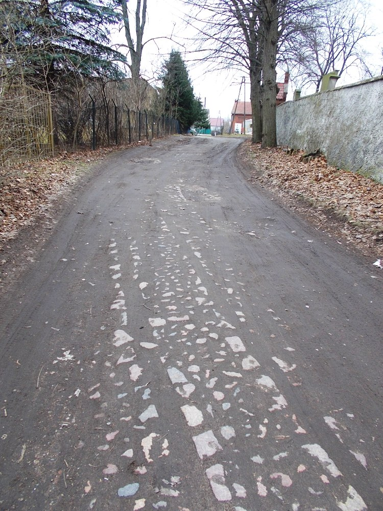
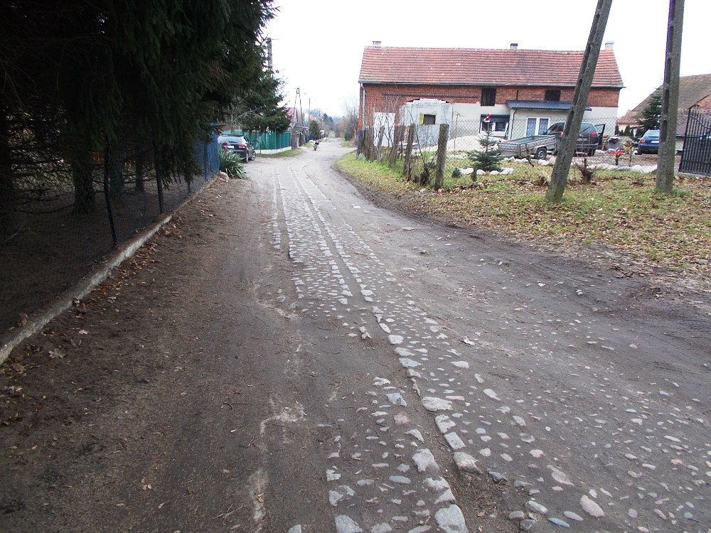
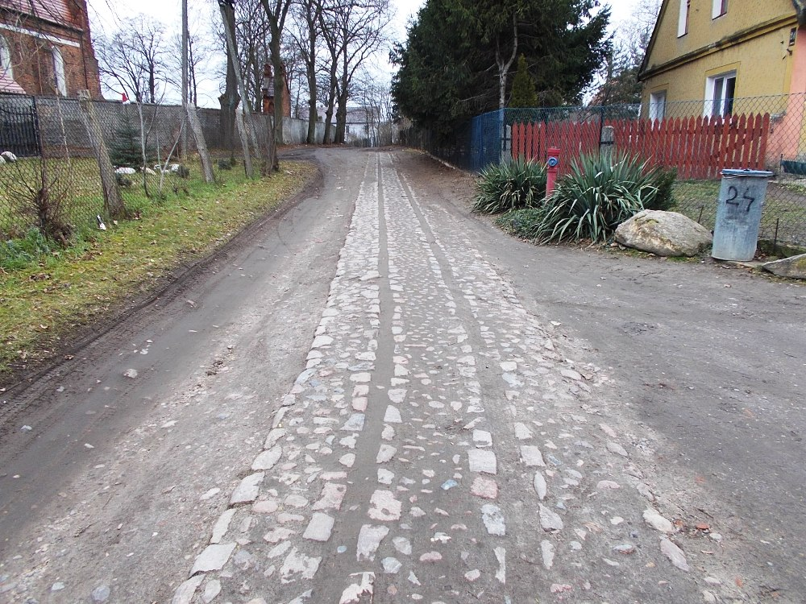
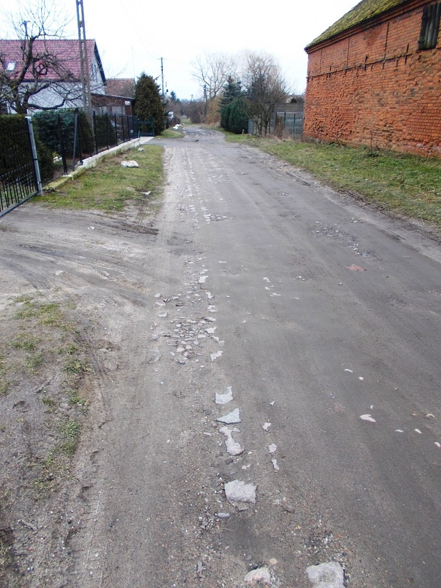
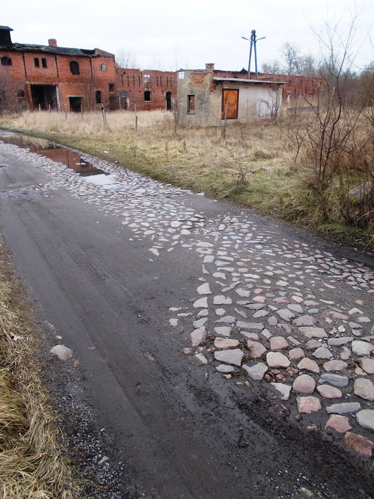
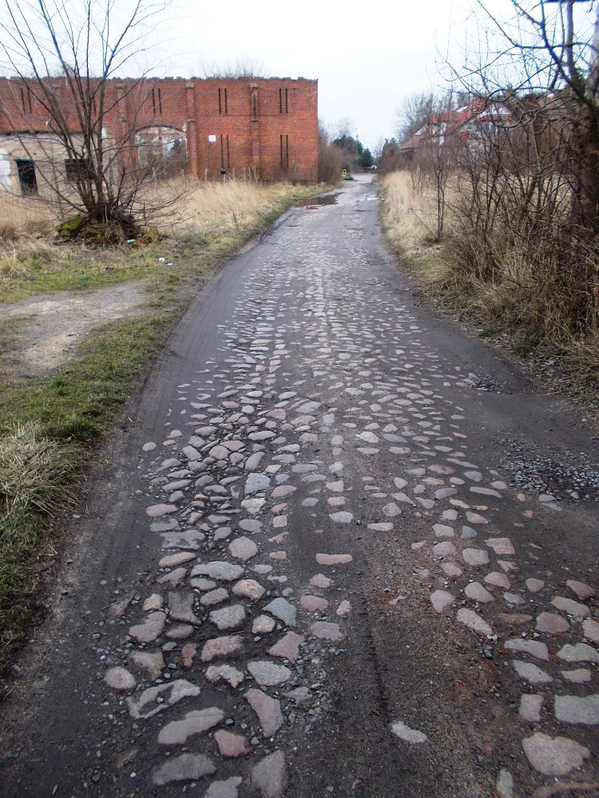
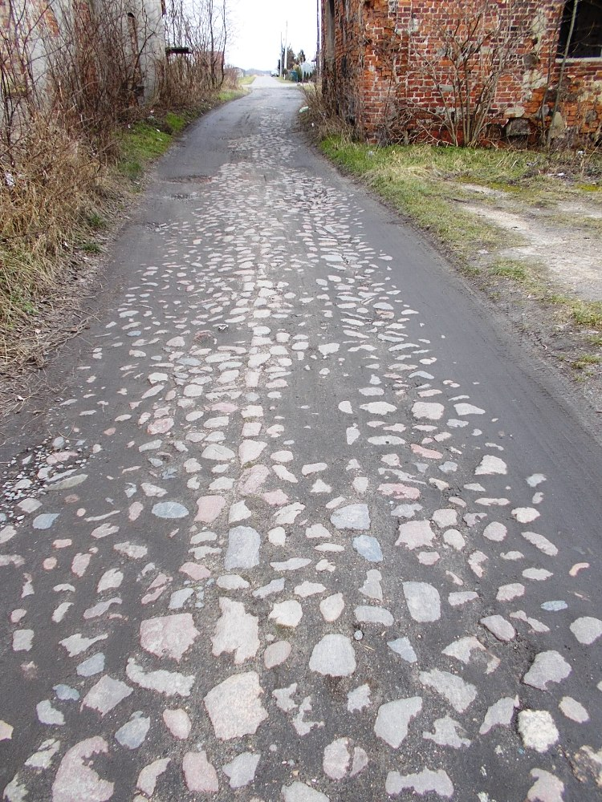

Chróścina, powiat górowski, województwo dolnośląskie, ale blisko granicy z Wielkopolską. Przez Chróścinę (a właściwie przez pogranicze Chróściny i Witoszyc) przebiegała niegdyś linia kolejowa, łącząca Leszno z Górą i Krzelowem, ale nie o niej będę dziś pisać.
Stacjom leżącym na obszarach użytkowanych rolniczo towarzyszyły niekiedy lokalne sieci "feldbahnów", czyli kolejek polnych, folwarcznych itd. Umożliwiały one m.in. transport do stacji i przeładunek płodów rolnych oraz innych produktów (np. cegieł), produkowanych w zlokalizowanych w okolicy majątkach. Do dziś zachowało się niewiele śladów po nich; "feldbahny" budowano często jako prowizoryczne, rzadko tworząc dla nich trwałe formy terenowe. Pojedyncze ślady zdarzyło mi się kiedyś obejrzeć m.in. w podleszczyńskich Pawłowicach, w Garzynie czy w Szlichtyngowej.
Według danych z bazy kolejowej, od stacji Witoszyce Chróścina odchodziły trzy odnogi takich kolejek. Niedawno zdarzyło mi się - zupełnym przypadkiem - "odkryć" wyraźne ślady wschodniej odnogi "feldbahnu" w Chróścinie. Przypadkiem - bo śladów "ciasnego toru" się tu nie spodziewałem; zatrzymałem się w Chróścinie po drodze, zamierzając sfotografować ruiny tutejszego pałacu i przyległego doń folwarku (temat na osobną "fotoopowieść", ale już nie kolejową). Jednak kiedy zaparkowałem na niewielkim placyku nieopodal tutejszego kościoła, ze zdumieniem zauważyłem, że w nawierzchni pełniącego rolę parkingu miejsca przebiegają wyraźne ślady wąskiego toru. Precyzyjny pomiar za pomocą podeszwy buta wykazał, że tor miał tu rozstaw 600 mm, czyli typowy dla wspomnianych kolejek. Zwiedzanie Chróściny zacząłem zatem od spaceru wzdłuż śladów wąskiego toru 🙂 Czytelny w terenie odcinek starotorza mierzy ponad 200 metrów, parę mniej wyraźnych śladów można znaleźć też w bruku drogi wewnetrznej zrujnowanego folwarku. Niewykluczone, że coś jeszcze udało mi się przegapić; jeśli ktokolwiek z grupowiczów mógłby coś uzupełnić bądź zasugerować kierunek dalszych poszukiwań, to będę zobowiązany.
Zapraszam na krótki foto-spacer po śladach wschodniej odnogi chróścińskiego "feldbahnu". Prezentowane zdjęcia zrobiłem 14 lutego 2023 roku. Parę słów dodatkowego opisu zawarłem w podpisach do poszczególnych fotografii.

Przykościelny placyk i początkowy odcinek czytelnego starotorza. Widok w kierunku zachodnim (a w zasadzie południowo-zachodnim), czyli w stronę stacji. Zdaje się, że zaparkowałem w skrajni 😃

Widok w drugą stronę z tego samego miejsca. Tu rozpoczniemy spacer w kierunku wschodnim.

Łagodny łuk. Ślad torowiska częściowo ginie w błocie.

Za zakrętem. Widok w kierunku wschodnim.

Spojrzenie wstecz, w stronę kościoła.

Kawałek dalej w kierunku wschodnich krańców Chróściny. Ślad toru stopniowo ginie pod warstwą ziemi. Dalej jest już tylko błoto i starotorze nie jest czytelne.

Przenieśmy się kilkaset metrów dalej. Po wejściu na teren zrujnowanego folwarku, zauważyłem w bruku ślad sugerujący, że biegnący łukiem tor przecinał w tym miejscu drogę.

Jeszcze jeden ślad - jeśli dobrze zinterpretowałem to co widziałem, tor musiał biec w zasadzie środkiem brukowanej drogi.

Widok w drugą stronę. Więcej śladów na terenie folwarku nie znalazłem; jeśli istnieją, to kryją się pod warstwą błota lub w gęstych chaszczach, porastających większość tego terenu.